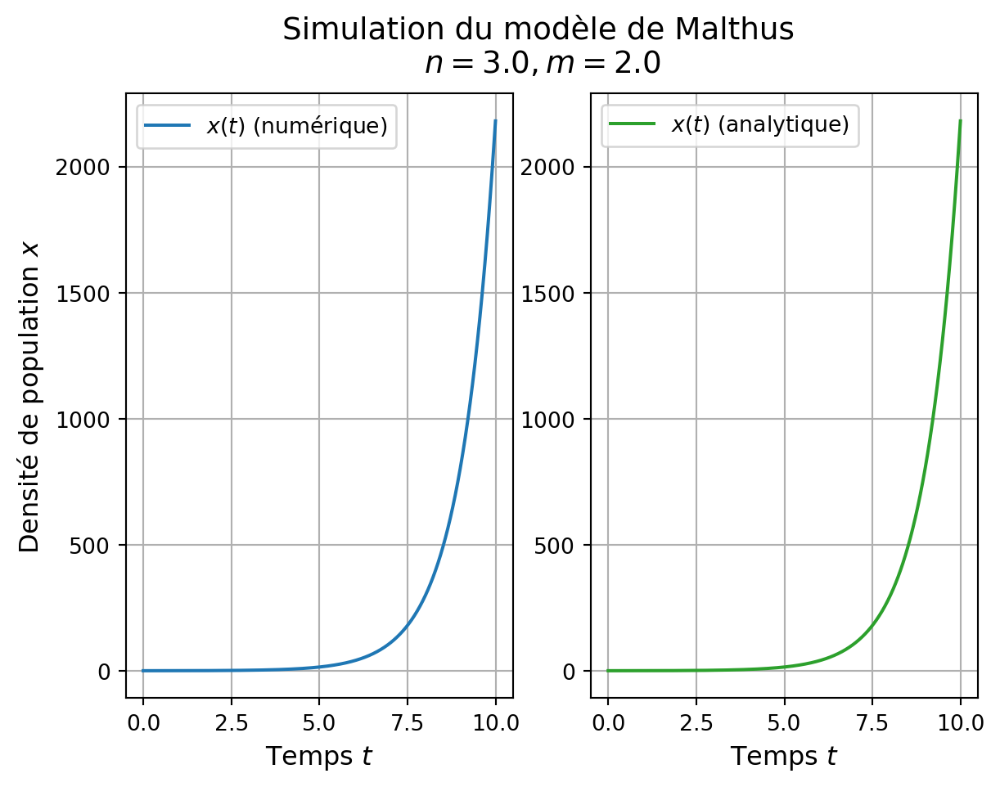
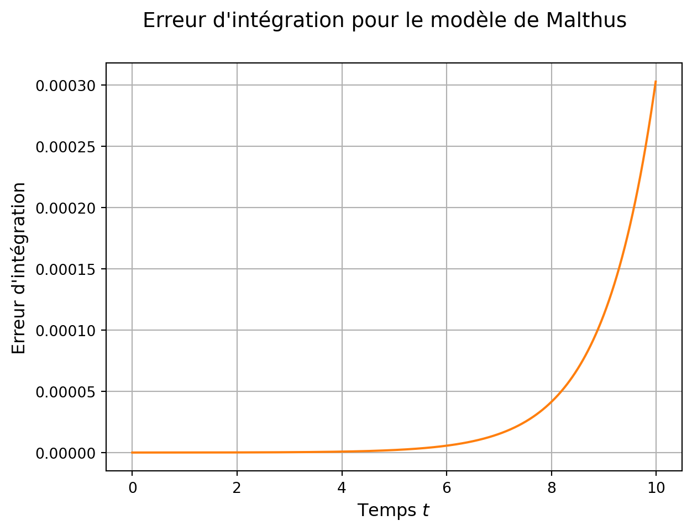
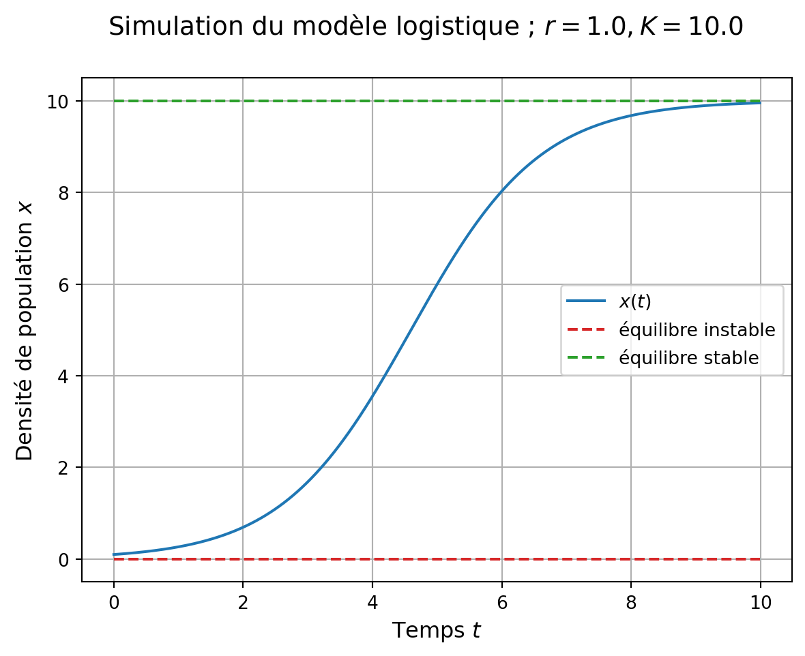
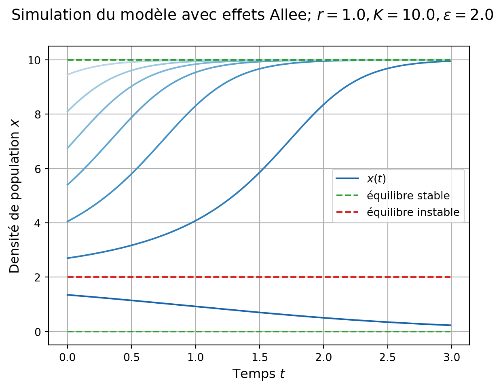

%reset -fPopulations isolées
Le modèle de Malthus
Nous considérons le modèle proposé par Malthus (1798) : \dot x = (n-m)x, \tag{1} avec n le taux de natalité, et m le taux de mortalité.
Pour simuler ce modèle, c’est à dire intégrer numériquement les solutions au problème de Cauchy correspondant à l’Equation 1 et x(0)=x_0\geq0, nous allons utiliser les modules numpy et matplotlib.pyplot, et la méthode odeint de scipy.integrate.
Préliminaires
On commence par nettoyer l’espace de travail, dans Jupyter :
Et on importe les modules cités précédemment :
import numpy as np
import matplotlib.pyplot as plt
from scipy.integrate import odeintSystème dynamique
Définissons le modèle: une fonction de l’état x, du temps t (nécessaire pour odeint), de paramètres, qui renvoit la dérivée \dot x.
def model_malthus(etat, t, params):
x = etat # unpack l'etat
n, m = params # unpack params -> params locaux
xdot = (n-m)*x # calcule la derivee de l'etat
return xdot # renvoit la derivée
Important
On fera attention a bien désencapsuler les états/paramètres/etc. dans le même ordre que l’encapsulation faite dans le corps du programme (cf. ci-dessous).
Problème de Cauchy (initial value problem)
Définissons les conditions initiales, et encapsulons le dans un np.array :
x0 = 0.1
etat0_malthus = np.array([x0])Définissons les paramètres et encapsulons les :
n = 3.0 # taux de natalité
m = 2.0 # taux de mortalité
params_malthus = np.array([n, m])Définissons le temps d’intégration tspan (vecteur entre le temps initial et le temps final):
t_0 = 0.0 # temps initial
t_fin = 10.0 # temps final
pas_t = 0.01 # pas de temps
tspan = np.arange(start=t_0, stop=t_fin, step=pas_t)Intégration
Il s’agit d’utiliser la fonction odeint de scipy :
int_malthus = odeint(
model_malthus, # système dynamique
etat0_malthus, # condition initiale
tspan, # temps d'intégration
args=(params_malthus,), # paramètres du syst. dyn. ici un tuple
## à un élément (cf. virgule)
hmax=pas_t) # pas d'intégration max. sur temps
Important
L’appel à odeint est très précis et doit respecter les règles et l’ordre indiqués ci-dessus.
L’intégration est faite :
int_malthus[:5]array([[0.1 ],
[0.10100502],
[0.10202014],
[0.10304547],
[0.10408109]])Il reste à représenter graphiquement la solution calculée.
Représentation graphique
Créons une figure et deux systèmes d’axes pour représenter deux sous-figures, puis traçons l’évolution de x(t) calculée numériquement en fonction du temps (gauche) ou la solution mathématique x(t)=e^{(n-m)t} x_0 (droite). La représentation est visible dans la Figure 1.
Découvrons aussi différentes options des méthodes subplots(), plot(), legend(), l’utilisation de LaTeX dans les chaînes de caractères, ou les fstrings de Python 3 pour compléter les chaines de caractères avec des valeurs via "".format().
## figure et systèmes d'axes
fig1, (ax1, ax2) = plt.subplots(1, 2, figsize=(9, 6))
## titre de la figure
fig1.suptitle('Simulation du modèle de Malthus\n $n = {}, m = {}$'.format(n, m),
va='top', fontsize='14')
## premier subplot
ax1.plot(tspan, int_malthus,
color='C0',
label='$x(t)$ (numérique)')
## modification des bornes
ax1.set_ylim(bottom=None, top=None)
## axes / légendes / grille
ax1.legend(fontsize='10')
ax1.set_xlabel('Temps $t$', fontsize='12')
ax1.set_ylabel('Densité de population $x$', fontsize='12')
ax1.grid()
## second subplot
ax2.plot(tspan, np.exp((n-m)*tspan)*x0,
color='C2',
label='$x(t)$ (analytique)')
## axes / légendes / grille
ax2.legend(fontsize='10')
ax2.set_xlabel('Temps $t$', fontsize='12')
ax2.grid()
Warning
Malgré une bonne précision d’intégration, une simulation/intégration numérique reste une approximation des solutions mathématiques, et par construction induit donc des erreurs, comme l’illustre la Figure 2.
Code
fig2, ax3 = plt.subplots(1, 1)
ax3.plot(tspan,
int_malthus[:,0]-np.exp((n-m)*tspan)*x0,
color='C1',
label='$x(t)$ (numérique)')
fig2.suptitle('Erreur d\'intégration pour le modèle de Malthus',
va='top', fontsize='14')
ax3.set_xlabel('Temps $t$', fontsize='12')
ax3.set_ylabel('Erreur d\'intégration', fontsize='12')
ax3.grid()
Le modèle logistique
Nous considérons ici le modèle “logistique” proposé par Verhulst (1938) :
\dot x = r x \left(1-\frac{x}{K}\right), \tag{2} avec r le taux de croissance intrinsèque de la population et K la capacité de charge de l’environnement.
Il n’y a pas de difficulté particulière par rapport aux simulations précedentes. On commence par nettoyer l’espace de travail, puis ré-importer les modules nécessaires :
%reset -f
import numpy as np
import matplotlib.pyplot as plt
from scipy.integrate import odeintLa définition du modèle, des conditions initiales et paramètres, l’intégration et la représentation graphique suivent les étapes vues précédemment.
Simulation
- Définition du système dynamique :
Code
def model_logistic(etat, t, params):
x = etat
r, K = params
xdot = r*x*(1-x/K)
return xdot - Condition initiale, paramètres,
tspan:
Code
## condition initiale
x0 = 0.1
etat0_logistic = np.array([x0])
## paramètres
r = 1.0 # taux de croissance intrinsèque
K = 10.0 # capacité de charge
params_logistic = np.array([r, K])
## tspan
t_0 = 0.0
t_fin = 10.0
pas_t = 0.01
tspan = np.arange(t_0, t_fin, pas_t)- Intégration :
Code
int_logistic = odeint(
model_logistic,
etat0_logistic,
tspan,
args=(params_logistic,),
hmax=pas_t) Représentation graphique
Code
## figure et systèmes d'axes
fig, ax = plt.subplots(1, 1)
## titre de la figure
fig.suptitle('Simulation du modèle logistique ; $r = {}, K = {}$'.format(r, K),
va='top', fontsize='14')
## simulation
ax.plot(tspan, int_logistic,
color='C0',
label='$x(t)$') # solution
## équilibres
ax.plot(tspan, np.zeros_like(tspan),
color = 'C3',
linestyle = 'dashed',
label = "équilibre instable")
ax.plot(tspan, np.ones_like(tspan)*K,
color = 'C2',
linestyle = 'dashed',
label = "équilibre stable")
## modification des bornes
ax.set_ylim(bottom=None, top=None)
## axes / légendes / grille
ax.legend(fontsize='10')
ax.set_xlabel('Temps $t$', fontsize='12')
ax.set_ylabel('Densité de population $x$', fontsize='12')
ax.grid()
Effets Allee
On s’intéresse à un modèle de dynamique de population avec “effets Allee forts”, souvent attribué à Gruntfest, Arditi, and Dombrovsky (1997)1 :
1 mais de nombreuses variations de cette forme polynomiale existent dans la littérature depuis Bazykin (1985)
\dot x = r x \left(\frac{x}{\epsilon}-1\right)\left(1-\frac{x}{K}\right), \tag{3} avec r le taux de croissance intrinsèque de la population (par analogie avec la logistique), K la capcité de charge de l’environnement et \epsilon le seuil en dessous duquel la population n’est pas viable (‘seuil de Allee’). On procède comme ci-dessus.
Simulation : préliminaires
- nettoyage de l’espace de travail et chargement des modules :
Code
%reset -f
import numpy as np
import matplotlib.pyplot as plt
from scipy.integrate import odeint- Définition du système dynamique :
Code
def model_allee(etat, t, params):
x = etat
r, K, epsilon = params
xdot = r*x*(x/epsilon-1)*(1-x/K)
return xdot - Paramètres,
tspan:
Code
## paramètres
r = 1.0 # taux de croissance intrinsèque
epsilon = 2.0 # seuil de Allee
K = 10.0 # capacité de charge
params_allee = np.array([r, K, epsilon])
## tspan
t_0 = 0.0
t_fin = 3.0
pas_t = 0.01
tspan = np.arange(t_0, t_fin, pas_t)Simulation : conditions initiales multiples
Pour mettre en valeur la bi-stabilité du système dynamique défini par l’Equation 3, nous créons une fonction qui intègre le problème de Cauchy depuis une condition initiale donnée.
def int_allee(x0, tspan=tspan, params=params_allee):
sim_allee = odeint(
model_allee,
x0, # argument de la fonction
tspan, # argument de la fonction
args=(params,), # argument de la fonction
hmax=pas_t)
return sim_allee
Note
Nous remarquons l’utilisation de kwargs (keyword arguments tspan et params), des arguments qui prendront leur valeur par défaut si ils ne sont pas re-spécifiés dans l’appel de la fonction int_allee().
Vérifions que la fonction réalise bien ce qui est attendu :
int_allee(0.1)[:5,0]array([0.1 , 0.09906363, 0.09813549, 0.09721551, 0.09630365])Représentation graphique
L’idée est de représenter plusieurs trajectoires issues de plusieurs conditions initiales. Créons un array de conditions initiales :
x0_step = 1.35
x0_arr = np.arange(x0_step, K, x0_step)Puis nous faisons la représentation graphique via une boucle exploitant la fonction int_allee() :
fig, ax = plt.subplots(1, 1)
fig.suptitle('Simulation du modèle avec effets Allee'\
'; $r={}, K={}, \epsilon={}$'.format(r, K, epsilon),
va='top', fontsize='14')
## redéfinition du cycle des couleurs pour un dégradé de bleu
colorAllee = plt.cm.Blues(np.linspace(.8, .3, x0_arr.shape[0]))
ax.set_prop_cycle(color = colorAllee)
## simulations
ax.plot(tspan, int_allee(x0_arr[0]),
label = "$x(t)$")
for x0 in x0_arr[1:]: # x0 parcour x0_arr
ax.plot(tspan, int_allee(x0))
## équilibres
ax.plot(tspan, np.zeros_like(tspan),
color = 'C2',
linestyle = 'dashed',
label = "équilibre stable")
ax.plot(tspan, np.ones_like(tspan)*K,
color = 'C2',
linestyle = 'dashed')
ax.plot(tspan, np.ones_like(tspan)*epsilon,
color = 'C3',
linestyle = 'dashed',
label = "équilibre instable")
## axes / légendes / grille
ax.legend(fontsize='10')
ax.set_xlabel('Temps $t$', fontsize='12')
ax.set_ylabel('Densité de population $x$', fontsize='12')
ax.grid()
Note
Nous utilisons une boucle avec x0 parcourant les conditions initiales x0_arr pour tracer les différentes solutions.
Note
Le dégradé de bleu des simulations est obtenu en créant une colormap à partir de plt.cm.Blues() ayant pour argument un array à valeurs dans [0,1], de la même taille que le nombre de courbes à tracer. Cette colormap redéfini ensuite le cycle de couleurs du système d’axes via ax.set_prop_cycle(color = foo).
La suite sur les populations exploitées par-ici.
References
Bazykin, A. D. 1985. Mathematical Biophysics of Interacting Populations. Nauka, Moscow (in Russian).
Gruntfest, Y., R. Arditi, and Y. Dombrovsky. 1997. “A Fragmented Population in a Varying Environment.” Journal of Theoretical Biology 185: 539–47.
Malthus, T. R. 1798. An Essay on the Principle of Population. J. Johnson.
Verhulst, P. F. 1938. “Notice Sur La Loi Que La Population Poursuit Dans Son Accroissement.” Correspondance Mathématique Et Physique 10: 113–21.